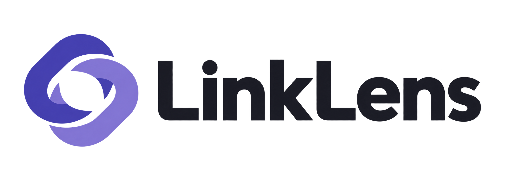
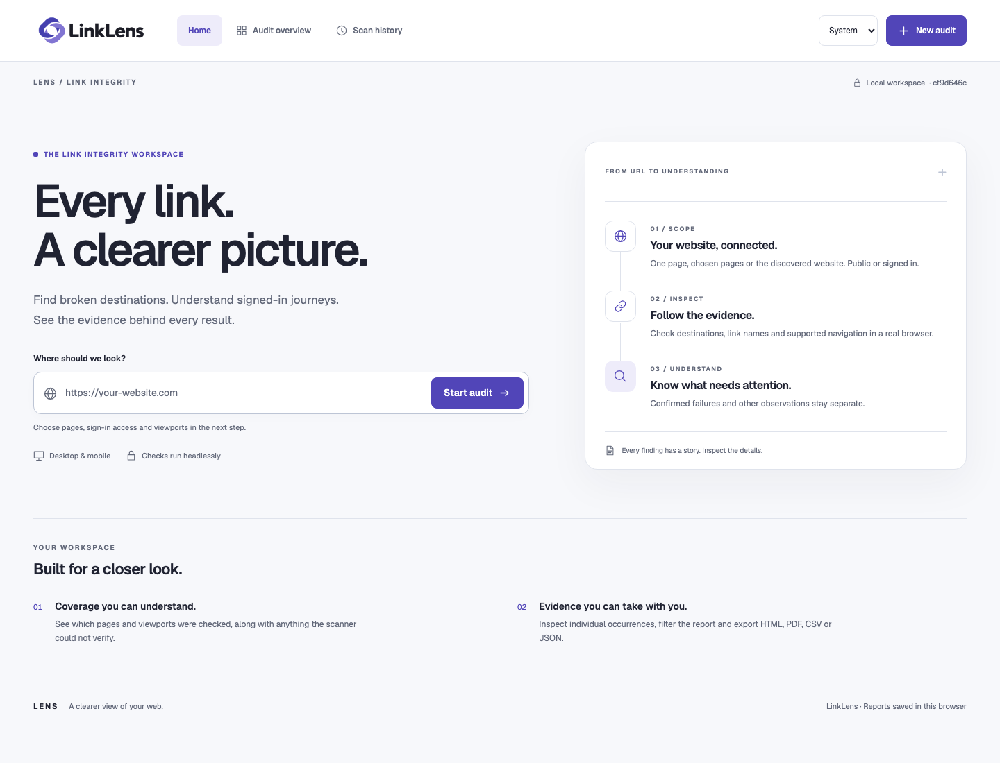
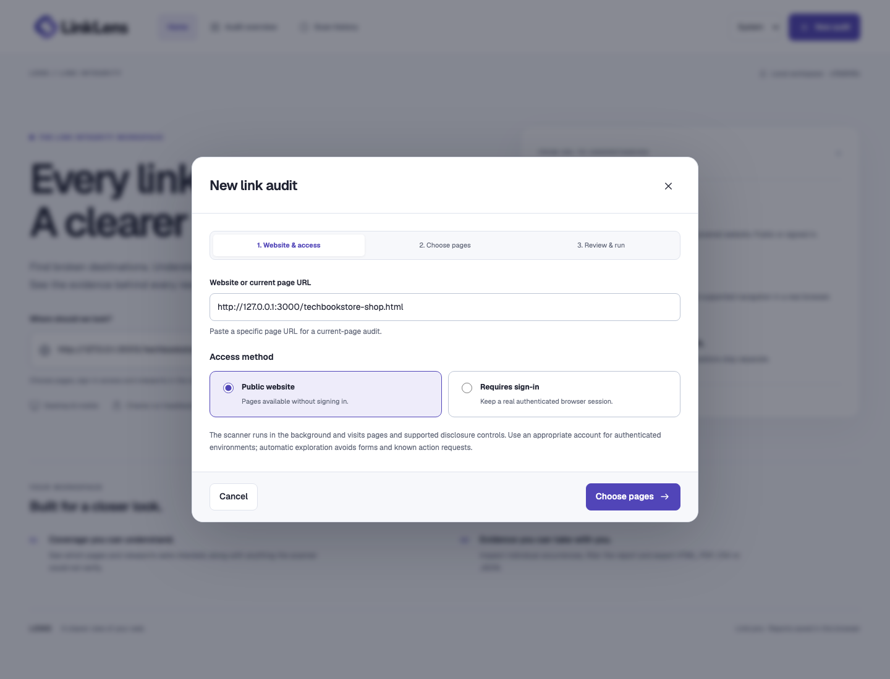
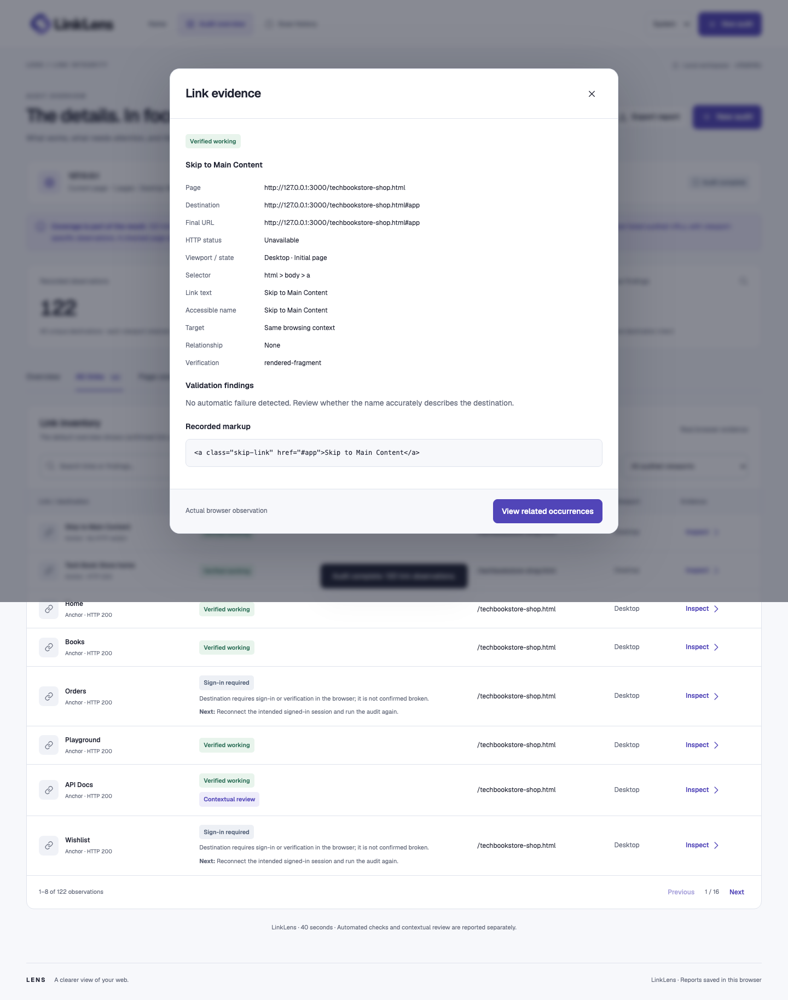
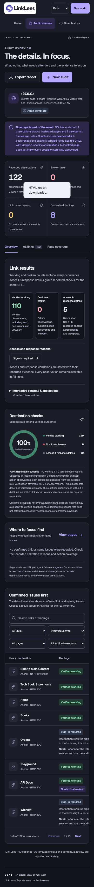

For Quality Engineers
Trace every occurrence to its source page, viewport, destination, browser response and recorded markup.

Verify destinations in a real browser, separate confirmed failures from access conditions, and connect every outcome to its page and viewport.
Explore the Walkthrough
A status code alone cannot explain authentication, redirects, scripted controls, viewport-specific navigation, or whether the rendered destination is genuinely usable.
Trace every occurrence to its source page, viewport, destination, browser response and recorded markup.
Prioritize confirmed broken destinations while retaining redirects, access conditions and naming issues as distinct evidence.
Review scope and coverage in one place, then share an interactive report with the full result inventory.
Move through the actual application. Every screenshot comes from a fresh public scan of the Tech Book Store storefront in desktop and mobile viewports.

Enter the page to inspect and choose public access or a browser sign-in journey. The captured run uses the Tech Book Store public storefront.
Use arrow keys on the step tabs, or Home and End. Screenshots open at full resolution. The captured scan recorded 122 link observations across desktop and mobile: 110 verified working, zero confirmed broken, and 12 sign-in-required destination checks.
LinkLens retains the source page, link text, viewport, response trail, final URL and recorded element so repeated destinations remain explainable.

Verified working and confirmed broken outcomes drive the success rate. Sign-in, rate-limit and response conditions remain visible in their own result group.
Desktop and mobile pages load separately, preserving navigation and evidence that appear only at one screen size.
Browser navigation combines HTTP evidence with the content users actually receive, including redirects and authenticated application routes.
Try outcome, issue type, page, viewport and text filters in the actual exported HTML report. Expand destination details or download a filtered CSV.
The bundled report contains the unchanged Tech Book Store storefront scan and works as a self-contained review artifact.
The application supports System, Light and Dark appearance with responsive report layouts. Compare the captured desktop views and inspect the mobile result.

LinkLens combines a local browser scanner with deliberate scope, authenticated session transfer, evidence review, interruption recovery and shareable reports.
Node.js and Playwright drive Chromium for page discovery, supported interactions and destination checks with browser storage available to authorized signed-in scans.
Observations retain source page, viewport, accessible name, destination, response, final URL, evidence and markup. Overlapping findings remain available.
Active jobs reconnect after refresh, saved history synchronizes across tabs, and HTML, PDF, CSV and JSON exports carry results into team workflows.
LinkLens 1.3.1 scanned the Tech Book Store storefront through its actual interface on September 22, 2026. Current-page scope covered desktop and mobile viewports, recording 122 observations across 40 unique destinations: 110 verified working, zero confirmed broken and 12 sign-in-required checks. The verified destination success rate was 100%.
Discovery supports up to 200 same-origin pages and 3,000 queued candidates. The report retains selected pages, independent viewport runs, supported control exploration and focused coverage notes for custom interactions or protected destinations that benefit from a follow-up journey.
{kind=link}
{kind=link}
{kind=link}
{kind=link}
{kind=link}
{kind=link}
{kind=link}
{kind=link}
{kind=link}
{kind=link}
{kind=link}
{kind=link}